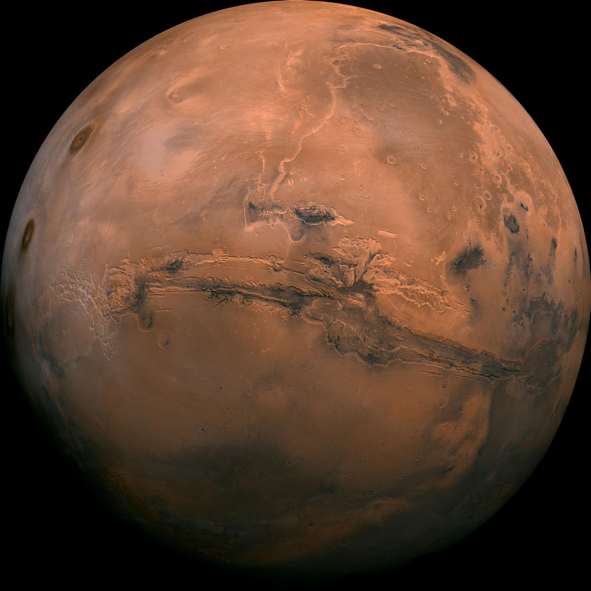

| Mars | Jupiter | Saturn | Neptune | |
|---|---|---|---|---|
| Mass (kg) | 6.42 x 1023 | 1.90 x 1027 | 5.69 x 1026 | 1.02 x 1026 |
| Diameter (km) | 6,787 | 142,800 | 120,660 | 49,528 |
| Mean Density (kg/m3) | 3,940 | 1,314 | 690 | 1,640 |
| Escape Velocity (m/s) | 5,000 | 59,500 | 35,600 | 23,300 |
| Average distance from Sun | 1.524 AU (227,936,640 km) | 5.203 AU (778,412,020 km) | 9.537 AU (1,426,725,400 km) | 30.07 AU (4,498,252,900 km) |
| Rotation period (length of day in Earth days) | 1.026 | 0.41 (9.8 Earth hours) | 0.44 (10.2 Earth hours) | 0.67 (19.1 hours) |
| Revolution period (length of year in Earth days) | 686.98 | 11.86 | 29.46 | 60,190 (164.8 Earth years) |
|  | |
|
|